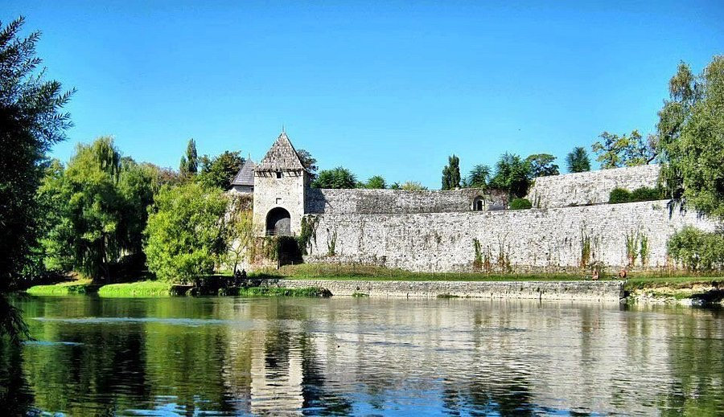
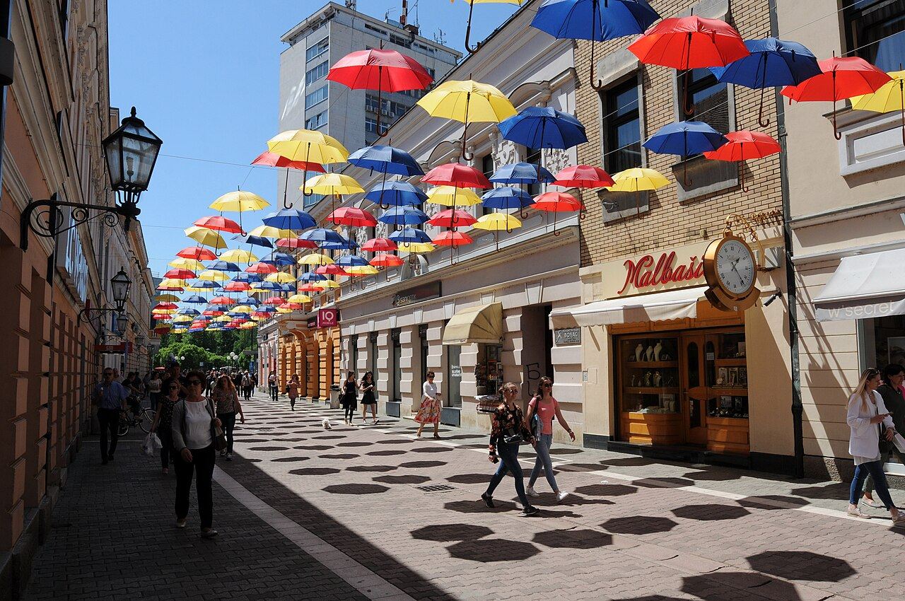
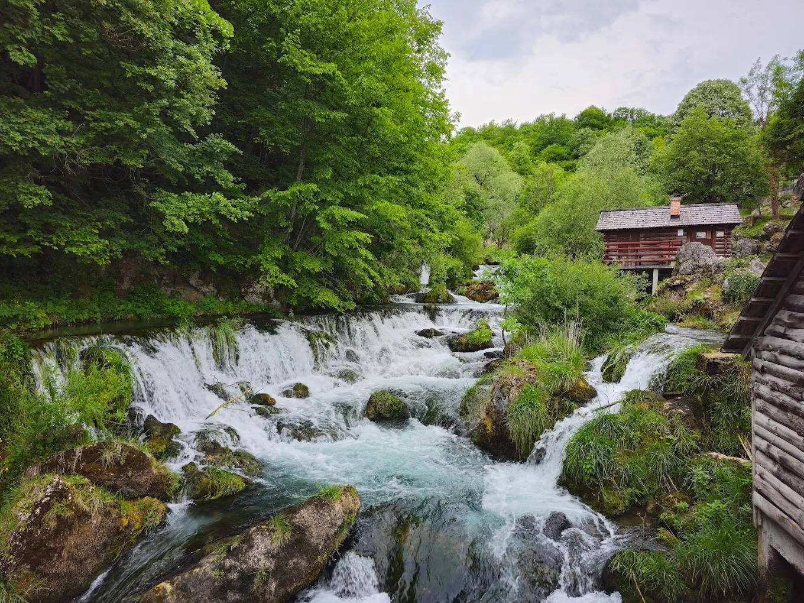
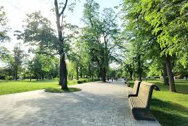
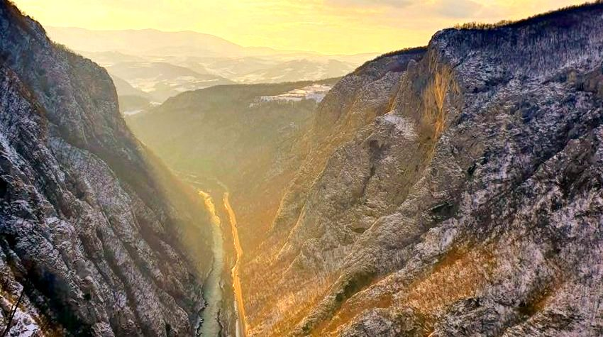
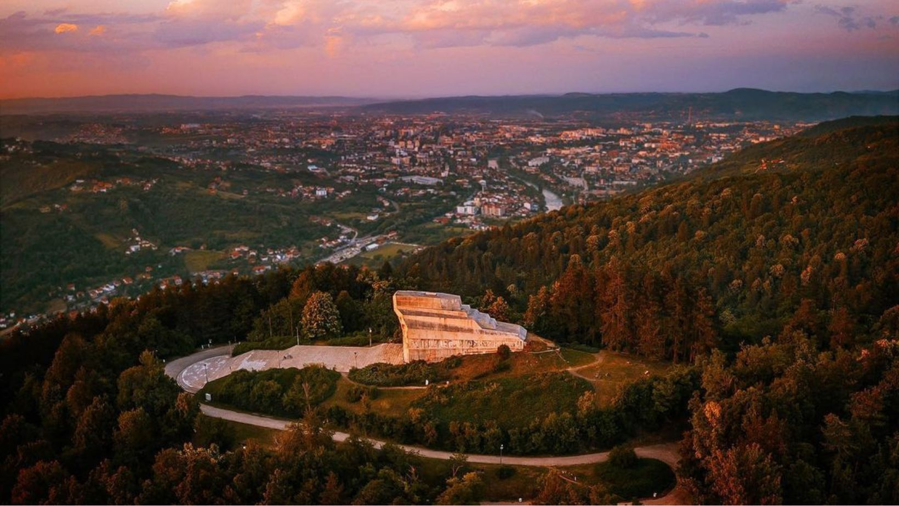

Explore Banja Luka
Discover Islamic sites, historical landmarks, and natural attractions for Muslim travelers
Attractions & Activities

Kastel Fortress
Ancient fortress on the banks of Vrbas river with panoramic city views.
City Center
Free
Prayer Space Nearby

Gospodska Street
Vibrant pedestrian zone with Austro-Hungarian architecture, cafes, and boutiques.
Old Town
Pedestrian Zone

Krupa Waterfalls
Series of cascading emerald waterfalls 30km from city in pristine natural setting.
Krupa Village
40-min Drive
Nature Trails

Park Mladen Stojanović
Lush green oasis with century-old trees, fountains, and WW2 memorial sculptures.
City Center
Free

Vrbas River & Tijesno Canyon
Dramatic 30m deep limestone canyon with emerald waters perfect for rafting and kayaking.
10km from Center
Rafting Tours Available
Picnic Areas

Banj Brdo
Iconic hilltop viewpoint with 360° city panoramas, walking trails, and historic Partisan monument.
Southwest of City Center
30-min Hike or Drive